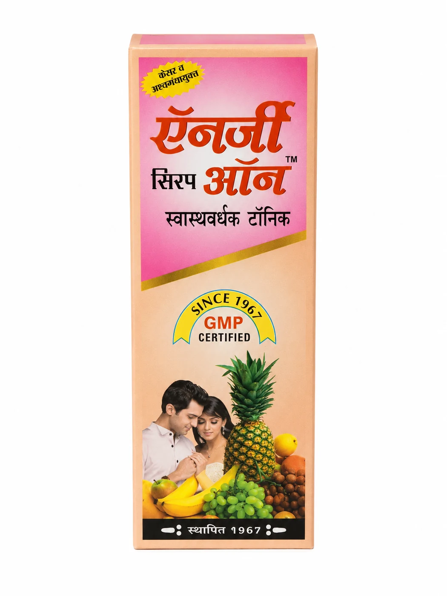
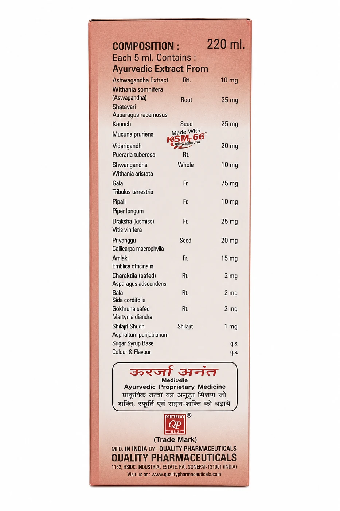
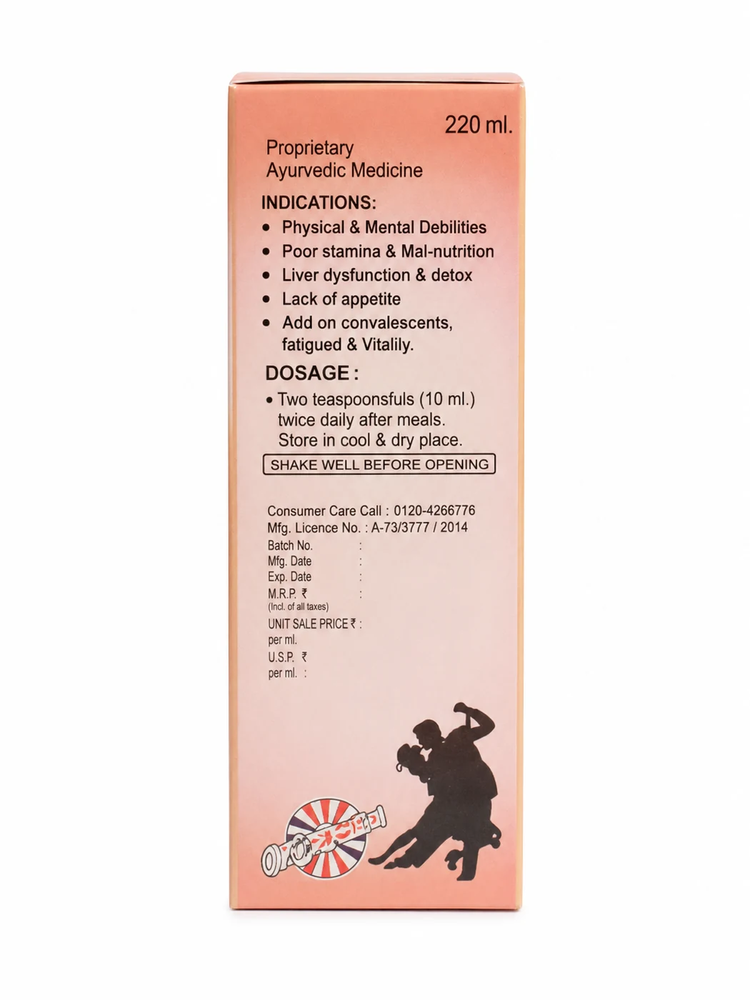

Quality Pharmaceuticals · Tonics & Wellness
Energyon
₹100
MRP · inclusive of all taxes
EnergyOn Syrup is a proprietary Ayurvedic restorative tonic designed to support overall physical and mental well-being. Formulated with Ashwagandha, Shatavari, Kesar (Saffron), and Amla, this syrup is indicated for addressing poor stamina, malnutrition, and lack of appetite.
Available packs
100ML Syrup 200ML Syrup 10CAPS
All ages - children and adults
Two teaspoons (10 mL) twice daily after meals.
Physical and mental weakness with poor stamina शारीरिक और मानसिक कमजोरी, कम स्टैमिना और थकान Malnutrition and poor appetite कुपोषण और भूख न लगना Liver dysfunction and detox support लिवर की खराबी और डिटॉक्स सहायता Fatigue and convalescence थकान और बीमारी से उबरना
Improves energy and stamina Supports recovery Boosts vitality
Product information is provided for awareness and enquiry. Use as directed on the label or by a qualified healthcare professional.
Key ingredients
Ashwagandha Root (Withania somnifera)
Ashwagandha root is known for its adaptogenic and rejuvenating properties.
Shatawari Root (Asparagus racemosus)
Shatawari root supports vitality, hormonal balance, and overall wellness.
Kavach Seed (Mucuna pruriens)
Kavach seed supports strength, stamina, and nervous system health.
Vidarikand Root (Pueraria tuberosa)
Vidarikand root supports energy, physical strength, and immunity.
Shankhpushpi Herb (Convolvulus pluricaulis)
Shankhpushpi supports memory, focus, and mental wellness.
Brahmi Booti (Bacopa monnieri)
Brahmi supports memory, concentration, and nervous system wellness.
Amla Fruit (Phyllanthus emblica)
Amla is rich in antioxidants and Vitamin C, supporting immunity and digestion.
Punarnava Root (Boerhavia diffusa)
Punarnava root supports kidney health, digestion, and overall body wellness.
Arjuna Bark (Terminalia arjuna)
Arjuna bark supports heart health, circulation, and overall vitality.